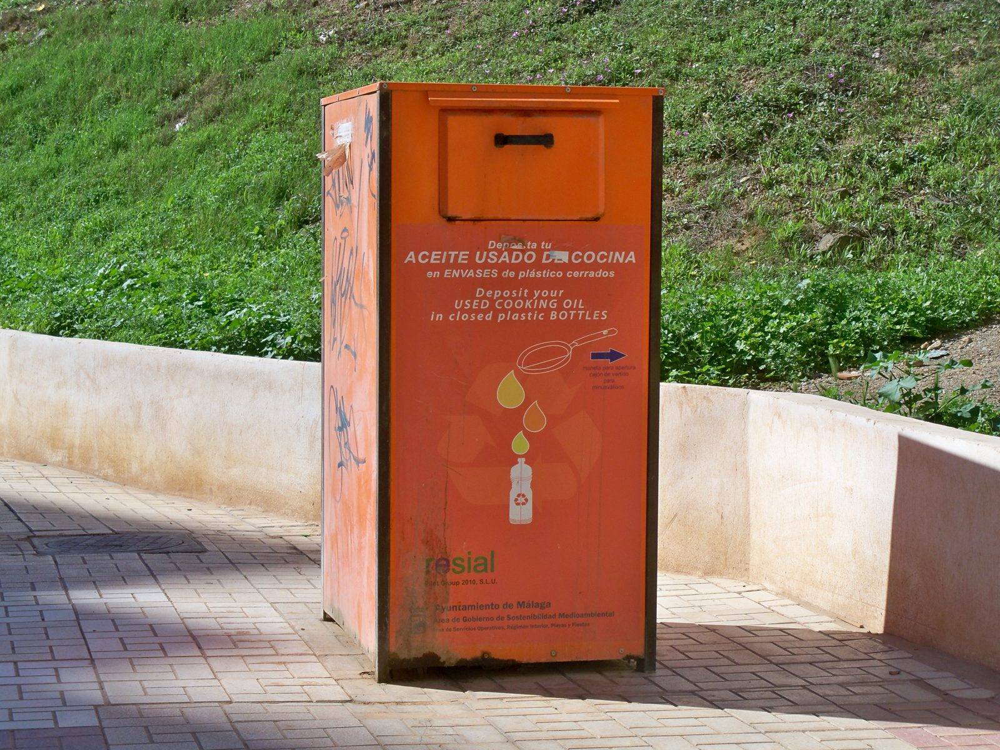
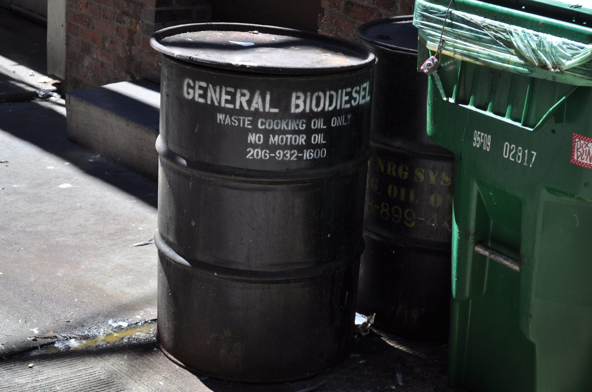

These images are Creative Commons images from Wikimedia Commons and are used to make the student prototype look more realistic. Full credits are listed in the references document.
Project image gallery
The gallery gives visitors a visual idea of collection, transport and industrial supply-chain work. Following are the visual evidence of the company's operations .


These images are Creative Commons images from Wikimedia Commons and are used to make the student prototype look more realistic. Full credits are listed in the references document.